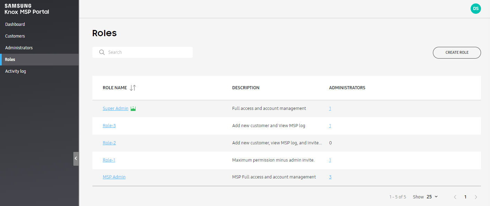
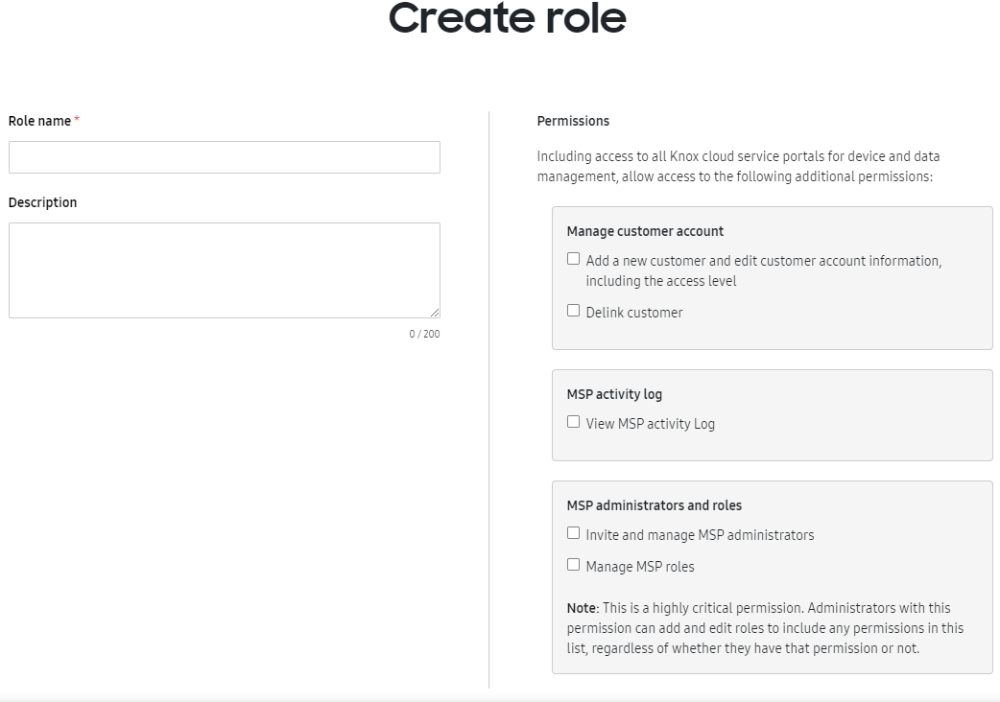
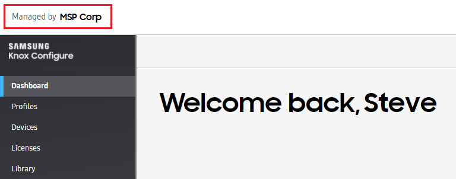
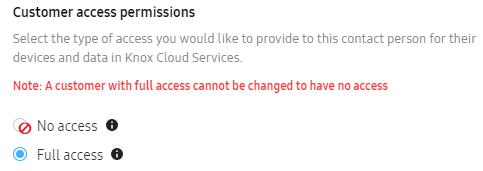

Knox MSP Program 1.38 release notes
Last updated April 25th, 2023
Grant sub admin access through role assignment including admin control per MSP customer
An MSP Super Admin — or any sub-admin with admin roles or permissions — can now create custom roles and invite other admins to these roles to manage a selected set of customers and services. This role based access control (RBAC) approach works the same way as roles for any other cloud services, including KME and KC. To know more on how to create, edit, and delete a role, see Manage roles.

The highlights of this feature are as follows:
-
Seamless access — Once an MSP admin is granted permissions to access a customer’s service, the admin now has Super Admin level access to the customer’s data, but cannot view or modify the customer’s own role or admins.
-
Manage multiple customers — A sub- admin can only manage customers to which they were granted access.
-
Customized UI — Depending upon selected permissions, services, and customers, the UI shown to the MSP admin changes.
MSP super admins can use RBAC features to perform the following actions:
-
Create new roles, including adding access permissions for one or more of the following:

-
Manage customer account access permissions, such as adding and editing customer information, as well as linking and delinking customers from MSP.
-
View MSP activity logs
-
Add or edit MSP admins and other related role based access, such as invite, add, and manage MSP admins as well as manage MSP roles.
Important
MSP admins can delete or edit permissions for other admins, making it important that you exercise caution when giving these permissions to a user.
-
-
Edit existing roles
-
Delete roles
The RBAC feature within MSP is similar to the feature offered within KC and KME.
Approved MSP admins can manage the Knox E-FOTA service using the MSP portal
Starting with this release, MSP admins can onboard Knox E-FOTA customers and manage their services on the MSP portal. This functionality allows MSP admins to easily manage multiple KCS services and customers from a consolidated view. For example, MSP admins can manage a customer who served with both Knox Mobile Enrollment (KME) and Knox E-FOTA on MSP portal. For Knox E-FOTA management on MSP portal, MSP admins can:
-
Onboard Knox E-FOTA customers — The MSP admin can easily onboard Knox E-FOTA customers by migrating existing Knox E-FOTA customers with their customer ID or creating new customers with necessary customer information. In case of migrating existing customers, MSP can start management of their account after receiving consent of the super admin of the customer. This process is the same as the former KC and KME service management.
-
Co-manage the Knox E-FOTA service with the customer — If a customer wants to manage their service along with MSP, they can ask for the Full Access permission from the customer.
-
Manage Knox E-FOTA service — After customer onboarding, MSP admins can manage the Knox E-FOTA service for Knox E-FOTA customers just as the customer IT admins, such as:
-
Manage devices
-
Create campaigns and assign devices to the campaigns
-
Manage licenses
-
Manage device groups
-
See Activity logs
MSP admins receive necessary notification emails just like a customer IT admin.
-
-
Update customer account — During management, MSP admins can update customer information like their address or phone number. MSP admins can also add managed services for the customer or add customer access permissions, such as changing No access permissions to Full access.
-
Delink Knox E-FOTA customer — If a customer and the MSP admin agree to terminate their association with MSP, MSP admins can initiate the Delink process. Once the customer agrees to delink their account, then the customer is deleted from the MSP portal and MSP admins can no longer manage the customer’s account and services.
For instructions to onboard an existing customer, see Add an existing customer.
Allow MSP to change “no access” MSP Customer “contact person” email address and first/last name
When an MSP admin creates an account on behalf of their customer, they need to provide certain important details, including their email address as well as first and last name. For customer accounts where the contact details of the default contact person are no longer valid, MSP admins can now change the first and last name as well as the contact email address associated with the customer ID. For instructions, see Edit customer account details.
The most common reason for changing this information is when one person leaves the company and another person is added as a replacement. The second reason is if the customer is added with a non-work email address and later on the MSP admin wants to delink the personal email address or give the customer full access. In such cases, you can only use a work email contact address. Changing the contact information does not change the customer ID.
MSP view integrated with Knox Admin Portal implementation
The initial MSP home page is linked to the customer’s services. This situation only arises if the MSP admin is managing a customer with both KME and KC services. For MSP admins whose customers have more than one service, when the MSP admin clicks the KC — Active link on the customer list view of the MSP portal, the Knox Admin Portal > KC page opens, even if the default Knox Admin Portal view is set to KME, thereby over-riding any user preference settings. Conversely, when the MSP admin clicks the KME — Active link on the customer list view of the MSP portal, the Knox Admin Portal > KME page opens.
Improvements to the delink feature
This release includes the following enhancements and improvements to the delink feature.
-
Freeze customer information for Delink Pending Status — The delinking process includes an enhancement that helps secure customer information from unintentional changes. When the MSP admin sends a delink request to the customer, and if the customer has not accepted that request, the status of the customer account changes to Delink Pending. For accounts with this status, MSP admins can still manage customers providing the appropriate KCS services, but cannot change any customer information available from the Manage Customer Account menu.
-
MSP can resend the Delink email request — MSP admins can now resend an email request to delink the customer account and stop managing their KCS services from within MSP. Resending the request may be necessary to remind customers who have not yet accepted the delink request or have lost access to the original email message.
-
Update delink popup text and email body — Once the customer accepts the delink request sent out by an MSP admin, the MSP admin loses all access rights to the customer’s configuration data and all related licenses are transferred back to the customer.
Visual indicator for managed customer
For Full Access customers that can co-manage their service with MSP admins, the customer can now see a visual indicator of being an MSP managed account on top left corner of their portal.

Prevent MSP from changing customer access from “full access” to “no access”
For Full Access customers, MSP admins can no longer change their access level to No Access. For Full Access customers, the access level option button is disabled and a new tooltip explaining this change shows within MSP.

Tooltips shown when changing the customer’s access level
When MSP admins try to change the customer’s access level from No Access to Full Access, they see a tooltip explaining the different access levels and warning them that this change is permanent.
Back to release notesIs this page helpful?